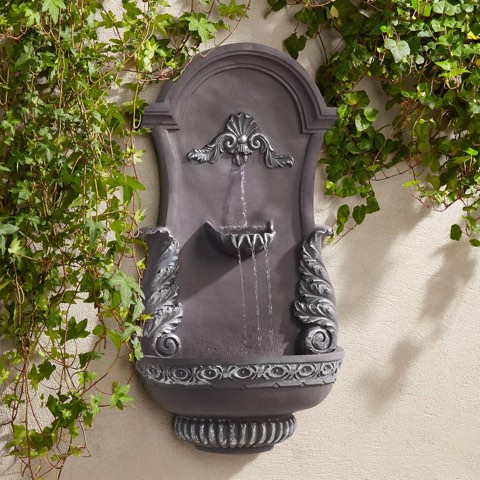
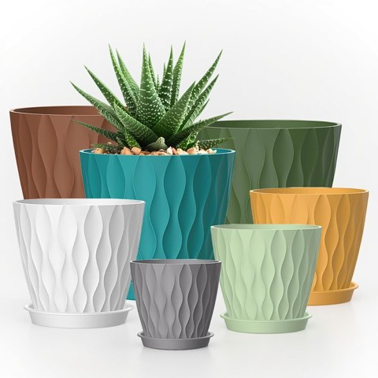

A small backyard doesn't need to feel small at all.
Most of the tricks that make a tiny yard feel bigger have nothing to do with square footage, they're really about how the existing space actually gets used.
These 12 ideas each solve a different piece of that puzzle, from planting strategy to simple visual tricks.
Most of them work best in combination, not as a single fix on their own.

12 Landscaping Ideas Worth Trying
1. Outdoor Rugs
A rug on a patio or deck defines a seating area the same way it would indoors, without adding any permanent structure.
This is one of the cheapest, fastest ways to make a small outdoor space feel like an intentional room rather than just a slab of concrete.
Outdoor-rated materials matter here, since a standard indoor rug won't hold up to weather exposure over time.
A small, low-cost addition that finishes off a space more than almost anything else on this list.

2. Artificial Turf
A small patch of real grass in a tiny yard often struggles with heavy foot traffic and limited sunlight.
Quality artificial turf solves both problems at once, staying green and usable year-round without any real maintenance.
This works especially well in a yard that gets used daily, where real grass would need constant repair just to keep up.
Not the right fit for every yard, but a genuine practical solution for a demanding small space.

3. Privacy Screening
A trellis with climbing plants, a slatted wood screen, or tall planted grasses all create a sense of enclosure without a full fence.
This matters more in a small yard, where close neighbors can make an already tight space feel even more exposed than it already is.
A well-placed screen also doubles as a backdrop, giving the eye somewhere calm to land.
Worth prioritizing for anyone who wants the yard to feel like a genuine retreat, not just a visible extension of the house.

4. Smart Corner Landscaping
Corners are consistently the most overlooked part of a small yard.
A dedicated planting, a small seating nook, or a vertical feature tucked into an unused corner puts dead space to work.
This requires looking at the yard's actual shape rather than just its total square footage.
Often the easiest source of "extra" usable space in a yard that otherwise feels maxed out already.

5. Raised Garden Beds
A raised bed solves the poor-soil problem many small, older yards have, while also adding a clear visual structure to the space.
This works on a patio or hardscaped area where an in-ground bed wouldn't even be possible otherwise.
Varying bed heights adds the same visual interest a layered planting scheme would in a larger yard.
A practical choice for anyone who actually wants to grow food, not just ornamental plants.

6. A Defined Pathway
A simple path, stepping stones, gravel, or pavers, gives a small yard a sense of intentional structure.
It also guides movement through the space, which makes even a tiny yard feel like it has more to explore than it actually does.
A curved path reads as more interesting than a straight one, even over a genuinely short distance.
One of the more affordable structural changes on this entire list to actually pull off.

7. A Small Water Feature
A compact fountain or a small recirculating water feature adds a sense of calm out of proportion to its actual size.
The sound alone does real work, masking street noise and adding a layer of tranquility a purely visual feature simply can't provide.
This doesn't require a full pond, either, a tabletop or wall-mounted version works in even the tightest yard.
A small investment with an outsized effect on how the space feels to actually sit in.


San Pablo Grey Ornate 33 Inch Large Outdoor Wall Fountain by John Timberland
Shop on Amazon8. Layered Lighting
String lights, lanterns, and low path lighting each extend how long a small yard actually gets used into the evening hours.
Warm-toned bulbs matter here as much as anywhere indoors, they set a relaxed mood a harsh white light simply can't match.
This is one of the fastest, cheapest ways to transform how a space feels without touching the layout at all.
Worth adding even before any bigger landscaping changes happen down the line.

9. Mirrors
An outdoor-rated mirror reflects greenery and light, creating the illusion of a yard that extends further than it actually does.
Positioning it to reflect a planted area, rather than a wall or fence, maximizes the trick considerably.
This works especially well on a fence or wall that would otherwise be a blank, unused surface.
A relatively inexpensive addition with a surprisingly large visual payoff for the cost involved.

10. Multi-Functional Furniture
A storage bench, a table that folds away, or seating that doubles as a planter all do more than one job in the same footprint.
This matters more in a small yard than almost anywhere else, where every piece of furniture competes for limited space.
Fewer, smarter pieces consistently work better than more single-purpose ones ever could.
Worth prioritizing before buying any furniture that only does one thing at all.

11. Container Gardening
Pots and planters offer flexibility a permanent garden bed can't, rearrange, replace, or move plants as the season or mood changes.
This also solves the problem of poor native soil, since each container controls its own growing conditions independently.
Grouping pots of varying heights adds visual interest the way a planted bed would, without the commitment.
A practical, low-risk way to experiment with a small yard's layout before committing to anything permanent.


Plastic Plant Pots with Drainage Holes and Trays, 7 Pack, 4 to 7 Inch Sizes
Shop on Amazon12. Vertical Gardening
When floor space runs out entirely, the only direction left is up.
A trellis, a wall-mounted planter system, or simply training climbing plants up a fence all make use of vertical space a small yard usually wastes.
This also adds privacy and greenery without eating into any actual walking or seating area.
Often the single highest-impact change for a genuinely tight space to make.

Final Thoughts
None of these 12 ideas require a complete backyard overhaul to make a real difference.
A few, layered together, lighting, a rug, some vertical greenery, often do more than any single big renovation ever would.
Start with whichever idea solves the most obvious problem in the yard right now, and build from there at your own pace.
A small backyard, used well, consistently outperforms a larger one left unstyled and ignored.